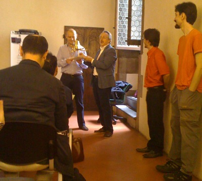

E-Privacy 2009: Towards Global Control
The Recipe

Ingredients
- The 2009 social environment
- A bunch of hackers
- Some competent lawyers
- A Google Spokesman
- The Big Brother Awards
- A consistent amount of paranoia
Preparation
Take the whole social environment, utterly unprepared to the media \(r)evolution happening in the last years, and let the hackers observe and talk/write about it. Bring in the lawyers, and let them recognize that “Houston! We’ve got a problem!”, whilst also they define it via lawspeak. Ask questions, and participate to interesting debates.
Now, deliver the 2007 big brother award to the Google Representative, let the sun dive in the hills, add a noticeable amount of Tuscany red wine, and get ready for the next day. Let the paranoia flow, while the hackers show how you can be traced and found via the cellular network and spied via wifi-networked cameras placed there for your safety.
Watch the undelivered Big Brother Awards 2009 sit on the speakers’ desk and suddenly put on sale on ebay, and go back home, where you read about, and watch, a video-edited interview to the italian PM.
Put everything into the fridge, and give your brain two days to metabolize it. Then write it all LOUD.
Photo by lorelei-ranveig
The scenario
We’re connected. We’re utterly connected. We’re sharing, we’re creating multiple identities, we’re exaggerating and becoming addicted, we’re earning money (maybe) from it, and if on one side we’re opening our minds to different cultures and points of view, on the other we’re just narrowing our visions because we find only the informations we search for, treating the Internet as a soft surrogate of the TV, annihilating critical thought, and even worse, demonizing the ‘net (not in the unix meaning of the term) because of the statements of some «politicians», forgetting that everything men have built in history are tools, and any problem tools cause it’s just a matter of how other men actually use them, not the tools themselves.
The arguments
Just follow the leader, and everything will be ok. Or maybe not? Taylor’s model that aims to improve “industrial efficiency” states that Workers are incapable of understanding what they are doing, and as such they have to be reduced to mechanical monkeys (no offense to monkeys intended), able to produce what other media-controlled monkeys have to buy as soon as the Buy & Large says the new color is blue! (cit. Wall-E).
This sounds like “global mind control”, because it’s the only way to convince people to do something. But there’s a finer way, as Benjamin Linus teaches us: To convince someone, act on the Achilles’ heel: and bring him to the solution you had in mind for him, making him/her believe that what he’s doing for you is their solution, not yours. So, as long as we are convinced to believe that more telematic control is for our own safety, we let authorities steal more and more freedom from us, via the questionable statement you’ve got nothing to hide, so why bother?.
Photo by jtu
Why bother
Because our freedom is at stake. I mean freedom to think, freedom to speak, and freedom to live our lives as we like, to act and feel as we deem appropriate on ourselves, as long as we respect others’ freedom to do the same. Sounds like such a simple principle, but it looks like we’re not smart enough to practice it: government to the rescue! They’ll tell you what’s right, what’s wrong, and how you should live.
Don't think (Stay) Drink your wine (Home) Watch the fire burn (Be) His problems not mine (Safe) Just be that model citizenNoFX – The Decline – Listen to this song
We should bother, also, because the tools, portrayed as favorites of the evil guys because they permit anonymous and uninterceptible communication, are used everyday by, say, PeaceReporter journalists, because they work in war areas, where information is heavily controlled, and often the truth that governments want to be aired to the media isn’t even close to reality. Need an example? Here it is.
The business side
Mayhem, aka Alessio L.R. Pennasilico, shared in “his talk” his broad experience in assessing and implementing security measures for business firms. The starting point is to think about people as human beings, and not as cheap dice-rolling machines: the biggest value in a company could seem its (digital) data, but it’s easier to recover data once it’s lost rather than find brains and human visions once they’re gone (or fired). Then, let’s think why management would invade users’ privacy to maintain security: because they’re afraid of data theft. In Italy, 60% of criminal charges about data theft was filed against the business’ own employees, and 78% of these people were actually authorized to access the data being stolen.
That’s why there are tales of mad system administrators running around with a silicone gun plugging every USB port they find. :). Or a single e-mail address for 200 employees, whose e-mails have to be printed back and forth and inspected by a manager before being delivered to each side of the conversation.
Again, another case of treathening users’ privacy in the name of security and safety. But this creates a clumsy work environment and imposes procedures that are time- and paper- wasting, while all we need is proper use of technology. DRM, watermarking and backups aren’t rocket science: could be applied to business documents to impose ACLs, prevent tampering and theft, while allowing an employee to feel “free” and as such carry out its work better. We as well need more education about how to use social networks at work, think twice before we share that “amusing photo” or write that “nasty rant”, either because someone could use our information against us or our company or because everything we put on the ‘net is google’s domain, it becomes our online identity, and we may regret it sooner or later.
Photo by bike
The identity side
Guido Scorza, in his keynote, correctly stated that whilst in the medieval age most of our identity was concentrated in our last name (Chi fuor li maggior tui, Dante Alighieri), then in churches’ logs, then in the city register office, eventually in everything we put on the Internet about ourselves. These stripes of identity, disseminated through the ‘net as we write and interact with near and distant people, make up a (or more) comprehensive digital identity(es) for us, and can describe us in unprecedented ways.
As long as ourselves put together and post this information consciously, everything looks good. But what happens when uncontrolled profiling comes into play? Every click we make is full of information, think about google search results: the match between keywords and the clicked result carries both information on how to improve search results for us, and as well information on how we perceive the world, which mistakes we make and, most importantly, what we’re interested about.
We spend every day more time on the Internet and less in the real world, because something that I’ve done is there, 24 hours a day, there, where my identity and all its different shapes are, into the cyberspace.
Who owns this information? Currently, it depends on the specific terms of service of each online service we use. Who has to regulate the use of this information? Laws, of course, but currently laws are bound to territory, and do not know how to cope with a globally connected virtual world (exception made for California, where “if a crime is committed against a californian citizen, the actor is pursuable wherever in the world he/she is”). So, if laws aren’t ready for the digital world, the service provider has to regulate fair use as well.. with all the controversy this can bring.
The Google side
(C) Google, Fair Use
Marco Pancini was literally submerged with questions at the end of his talk, because it doesn’t happen often to have a competent spokesman whose focus is on policy regulation.
Marco is one of those people who try to bridge between users and governments in the google scenario, in order to give better services to the former, and hint on better policies to the latter… allowing Google Inc (GOOG) to survive, I’d add :).
He said that privacy for Google isn’t an useless appendix, and it’s not enough to design privacy policies that adhere to current laws: every Google service has privacy built-in, and people like him also try to advocate this approach into the company as well. Because giving away a free service doesn’t have to imply that the users have to pay in terms of profilation and privacy, companies need new business models (users will want vanity URIs, I’d add) and need to treat user’s data only for the fullfillment of the technical side of the service.
Google operates on three principles: transparency, to give the users human-readable terms of service they’re working on graphical elements (a-la CreativeCommons) and video explanations; choice via persistent opt-in / opt-out to tracking features, like they’re doing on http://google.com/privacy ; security via data retention for 9 months in order to give users a safer and better service.
Personally I think that 9 months data retention for our safety is a moot point, I don’t agree, and please re-read the introduction to this article. I’m an heavy user of google services, and I think they know about me more than my mother and I really hope that they’ll remain “the good guys” for the years to come.
After the talk, vecna asked an interesting question: «Google now knows not only lots of informations, it also knows how to correlate it (e.g. finance + news) and actually knows, in real time, where the world is heading to, and how. This is an enormous strategic power! How do you cope with that?»
Photo by rehvonwald
Marco dribbled a bit: «We always try to be on the “good” side and make “fair” use of our data. About privacy we try to spread knowledge and talk with governments and companies to develop newer and more relevant rules, because e.g. the OCSE policy was enacted before internet became so widely adopted. Always pursuing the goal to give everyone better services»
vecna tried again: «OK, new rules are welcome, but in order to implement targeted and relevant advertising it’s not necessarily required to build a comprehensive database of all users’ search queries..»
Marco: «AdSense database is completely separated from other Google databases, a correlation is not possible, and logs are anonymized and kept for a maximum of 9 months. Furthermore, via chrome (and the privacy setter) you can permanently opt out of the AdSense/Doubleclick cookie: please take these actions as a demonstration of us going in the right direction :).
Also, please remember that Google as a company has to operate into the legal framework, so many of those questions should be directed to the institutions, and not to us. The legal framework is quite a bit “bugged” at the moment, but we hope things will change fast. We absolutely need more discussion to generate a well designed framework about the internet, privacy, and issues shared at the global level.»
mmhmh, the last phrase reminds me the conclusion of the nnsquad convention… quite funny.
The discussion could have continued for the next two or three hours, to the point that even I, noticeably shy at the first day of conventions, could have asked something ;) but time was precisely scheduled, so Marco Calamari politely asked the parties to stop and caught the moment to deliver the 2007 Big Brother Award to the Google representative for the “most invasive technology” of the time.

Photo by me
The protection side
Security and privacy are perceptions: they cannot be measured neither analitically nor numerically: as such, they are influenced by the environment, and by who tells the news. Luckily the internet weakens the usual control and mass-influence measures, because of its decentralized nature. We can protect ourselves from global control, as long as we are informed enough.
This was the incipit of vecna’s talk, he went on stating that stringent security measures can be accepted by un-informed individuals, because they don’t know the rights they’re losing, and also 1) for limited periods of time 2) if all the people are treated equally and 3) if the infrastructure is managed by the state. This is not what happens nowadays, because both Internet Service Providers and Content Providers are hold by private companies, that care about their business.
So, in this evil world, with a minimal effort we can protect ourselves: we should use cryptography, anonymous networks (e.g. Tor / freenet), and understand the tools we use everyday: DNS filtering is easy to bypass, as long as you know how DNS work. Furthermore, with sniffjoke, a tool developed by vecna itself, protection against sniffers is possible even without the need for both peers to agree on a crypted channel.
Previously the content networks were centralized and under strict control: TV über alles, but also telephony and credit circuits. Today the web is replacing the TV, VoIP is being used for vocal/video communication, and even bank circuits are interoperable (think Paypal). As a demonstration of this thesis: why no one has marketed a crypted GSM phone? Because the bar is set very high to access those networks.
Conclusion: long live Peer-to-Peer decentralized networks, Open Source and Free Software, to allow everyone to know, share, modify, understand. The missing tech-savvyness is the most relevant failure, in my opinion.
Well said, vecna, almost straight to the point :).
Picture by vecna
The communication side
Tapping
naif is a keynote machine. It was really difficult to take notes during his talk, because he speaks really fast and he is also very synthetic: an excellent speaker. He works with Phil Zimmerman, the famous inventor of PGP, and they’re working together on ZRTP. Why? Because our cell phones / VoIP calls can be tapped, and it’s such a bad thing.
Fabio started defining the difference between tactical and non-tactical tappings, the former being carried out directly on the telco wires or by intercepting radio signals, so the tappers need telco collaboration; the latter are carried out via telco logs, performed by the institutions. An interceptor could either tap a device (cell phone, computer, etc) or a specific communication line (residential wires, internet cafes, etc). Another kind of tapping is the mysterious echelon) , that implements parametric tapping by analyzing all the data flow and filtering it via some parameters (patterns, correlation, etc). There is no legislation regarding parametric tapping, as of May 2009.
To tap a GSM phone, investigation agencies commonly use fake BTSs, GSM transceiver stations, positioning them near the attacked device so the cell phone attaches to them because of the stronger signal ratio, and establish a Man-in-the-middle attack: tapping devices implementing a fake BTS can be bought for 100k $, or even rent for 2k $ per day.
Tapping a PSTN/ISDN phone it’s relatively easy, because telco cabinets are accessible (maybe using a bit of social engineering and by masking as a telco operator), and the attack is carried directly on the cable.
Fiber tapping is also possible, and makes an attacker able to listen to an entire neighborhood data traffic, by simply accessing a manhole.
Ethernet tapping into an office is extremely easy, either via arp poisoning software or via economic ad-hoc devices.
Last but not least, the weakest link of the chain is people: an employee with a 1300$ salary can be corrupted with a bribe of, say, 15k $, and maybe offer more tapping services that were requested at first.
Source: guardian.co.uk
Protecting
Protection is difficult mainly because of the overabundance of different technologies (PSTN, ISDN, GSM, CDMA, UMTS, 3GPP, VoIP, Sat, ...) and institutes that aim to standardize them (ITU, IETF, Telco consortiums, ISP consortiums, ...) but most of the time these consortiums act on behalf of $big_companies whose interest is business, not standardization. As such, there are no standard security measures for telephony, but there are some best practices.
IMS Overview Source: wikipedia
The weakest form of protection, carried out into the analog domain (and as such on circuit-switched networks) is scrambling, where the original signal is encoded to make it difficult (but not impossible) to recover. Usually scramblers do not remove “unwanted sequences” (e.g. complete silence) that make it easier for an attacker to reverse engineer the method used to encode the signal.
Into the digital domain, luckily, there is availability of cryptography, whereas any bunch of data can be transformed back and forth from gibberish by two algorithms (one for the encoding and another for the decoding) each one of them make use of a key. The strenght of cryptography lies in the secrecy of the keys and not the algorithm, because any algorithm can be reverse-engineered, and peer review permits an higher level of reliability.
So, VoIP calls can be safely encrypted at the protocol level, or can easily be routed through encrypted channels, because they are prosaic streams of data that flow on packet-switched networks. What’s more difficult is mainstream adoption, because (again) there are consistent interests in monitoring and controlling voice calls that put a barrier to the adoption of a standardized way of secure communication. These barriers suddenly materialize in unreachable (for the masses) technology like NSA’s SCIP (currently used on Obama’s BlackBerry) or utterly complex approaches to implementation of secure VoIP channels, like Cisco’s DTLS.
Quick introduction to VoIP: there are mainly two protocols, SIP and RTP. The former carries signalling information, such as “User A is calling B, RING RING!” and “User B picked up the receiver, HELLO?”. The latter carries media information, the digital representation of voice / images. SRTP is the cryptographic counterpart of RTP, but before a secure session can be established, the two peers need to 1) verify each other’s identity and 2) exchange their respective keys. There are two protocols to exchange keys: the aforementioned DTLS (endorsed by Cisco, Cisco and… Cisco :)) and ZRTP (Open Source software designed by PGP author Phil Zimmermann).
The SIP trapezoid, source: networkdictionary.com
Why is DTLS a complicated approach? Because it requires additional headers into SIP messages and extensions to the RFC 3261 to define a new protocol identifier used by the Via: header. DTLS also implements a PKI that requires a CA(Certification Authority), the third party you have to trust. In a VoIP world with different standards, companies and technologies, the road to adoption of another variation of the original SIP standard is long and shaky. Furthermore, the PKI model means that individuals cannot simply download a software, trust each other and start communicating privately.
ZRTP, on the other hand, is built around the KISS principle: Keep it simple, stupid! because simple is always better than complex. ZRTP implements key exchange directly into the media stream, leaving the signalling stream alone and assuring for maximum interoperability with existing infrastructures, even if they’re not SIP-based. Moreover, ZRTP supports Perfect forward secrecy, a cryptographic property that guarantees secrecy of communication even if tapping occurs, and the key material on both sides is compromised.
What about identity verification? DTLS uses a PKI, so this check is done by the software that verifies the exchanged keys (certificates) are signed by the trusted CA; ZRTP on the other hand uses a simple human-based verification: every communication is distinguished by a short authentication string, clearly exposed to the user by the software, so both peers can manually verify it at the start of their call. If you want to use ZRTP today, go download ZFone, it’s free (of course). (ps. It installs a launchd-started daemon on TCP port 3000, so if you’re a Rails developer like me, you should move your mongrels on different ports until Zfone will offer a configurable listening port :)).
Protecting further
What about using the ZRTP key-exchange protocol over non-IP serial pipes? It’s what Fabio presented in his last keynote slides, and it’s the project he’s currently working on. So, ZRTP/S could be used over GSM, UMTS, Satcom, even over Bluetooth: it’s a generic framework for private vocal communication currently working on Nokia’s SymbianOS phones using the Circuit Switched Data line, so it has the added benefit of not charging you if you’ve got a monthly data plan :). Awesome!
Final words
This recap covers only the first day of the e-privacy convention, because the second day was interesting as much as the first, but it was less technical and more lawyer-oriented, apart for Jan Reister keynote regarding Tor usage every day, information that you can find on http://torproject.org/ as well. Have a look also at all the slides presented in the two days.
I also enjoyed Paolo Mazzolari keynote that stated that anonimity is the fundamental principle for data protection, because many times trying to “anonimize” data collected by search engines and so on is not quite useful: think about the AOL search data scandal that happened back in 2006. In this episode, user names were removed from search logs and replaced with random numbers, but preserving an association between user and generated number. This means that, because keywords remained intact, if you searched your name or a place near your location, you could be easily identified and possibly scammed/stalked by criminals.
I suggest you to start caring about these issues, because in the society we’re living nowadays information equals power, and who has more information has got more power. Because it’s so easy to protect yourself by using cryptography and tools that anonymize your location, you’d better starting to use them for your private conversations.
Good luck, and see you at e-privacy 2010 :).
hellais, photo by me

{kind=link}
{kind=link}

About this entry
You’re currently reading “E-Privacy 2009: Towards Global Control”, an entry on sindro.me
- Published:
- 05.28.09 / 13PM
- Updated:
- 10.08.16 / 00AM
- Sections:
- development politics
- Tags:
1 comment